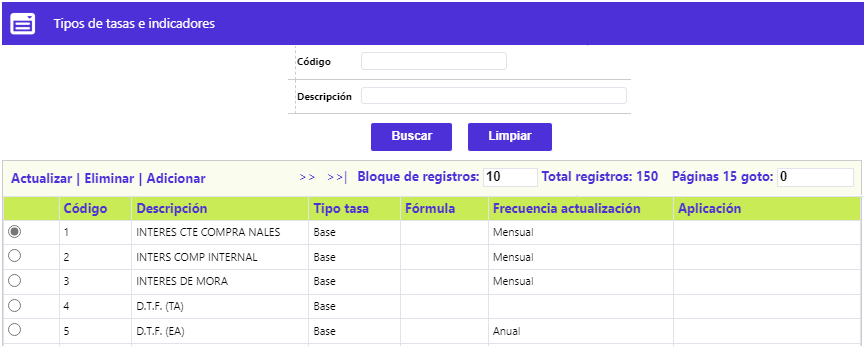
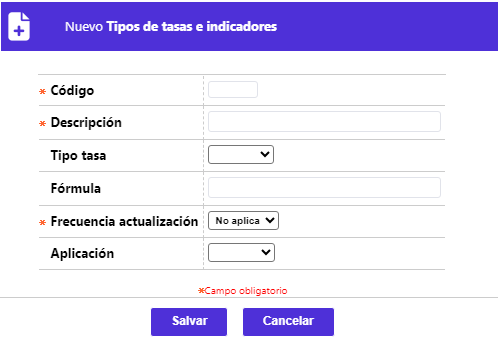
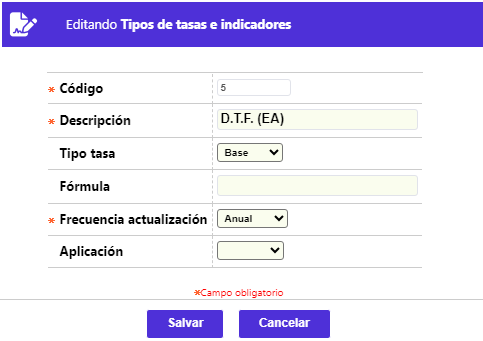

Tipos de tasas e indicadores
A través de esta opción se habilita la consulta y mantenimiento de la tabla en la cual se almacena la codificación de los diferentes items o variables locales, conocidos como tipos de tasas e indicadores económicos. La mayoría corresponden a valores absolutos, usualmente variable, y algunos otros cuyo valor es el resultado del cálculo de una fórmula. El formulario contiene los enlaces: Actualizar, Eliminar y Adicionar.

Adicionar: Al activar ese enlace se despliega un nuevo formulario:

Descripción de campos
Código |
Campo numérico de cuatro dígitos, obligatorio, que debe contener el código asignado a cada uno de los tipos de tasas e indicadores económicos definidos por la entidad. |
Descripción |
En este campo alfanumérico de 40 posiciones, obligatorio, debe contener el nombre asociado al código anterior. |
Tipo tasa |
Campo que posee lista de valores tipo combo, de la cual seleccionar entre: Fórmula (un cálculo a partir de otras variables) o Base (un valor absoluto), la manera en la cual está definido el indicador. |
Fórmula |
Cuando en el campo anterior se ha seleccionado la opción Fórmula, este campo se habilita y se vuelve obligatorio. Aquí se definen las variables, operadores matemáticos y/o valores que componen la fórmula mediante la cual se va a calcular el indicador. Una variable corresponde a cualesquiera de los restantes códigos de esta misma tabla antecedido por la letra T, por ejemplo,(T3*T8)/360, equivale al indicador identificado con el código 3 multiplicado por el indicador identificado con el código 8 y ese resultado dividido por el número 360; se debe tener en cuenta que el resultado de dicha fórmula se reflejará en el formulario de Indicadores económicos. Si la fórmula a definir requiere el uso de funciones numéricas diferentes a lasSi la fórmula a definir requiere el uso de funciones numéricas diferentes a las operaciones aritméticas básicas, consulte el documento anexo. |
Frecuencia actualización |
Campo obligatorio que posee lista de valores tipo combo, de la cual se debe seleccionar la periodicidad con la que debe ser actualizado el valor del indicador económico, condición que aplica únicamente para los indicadores cuyo valor corresponde a un valor base o absoluto. |
Aplicación |
Dado que varios procesos tanto en línea como en batch requieren la definición previa de tasas e indicadores económicos, el primer proceso que debe ejecutarse en el día es la verificación de la existencia de esos valores. Para poder realizar esa verificación, el procedimiento evalúa el valor seleccionado en este campo, a partir de las opciones contenidas en la lista de valores tipo combo, y que puede ser Diario, Mensual o Anual. |
Actualizar: Al activar ese enlace, se despliega un formulario con los datos del registro desde el que fue invocado, en el cual, el único campo no modificable es el de Código:
